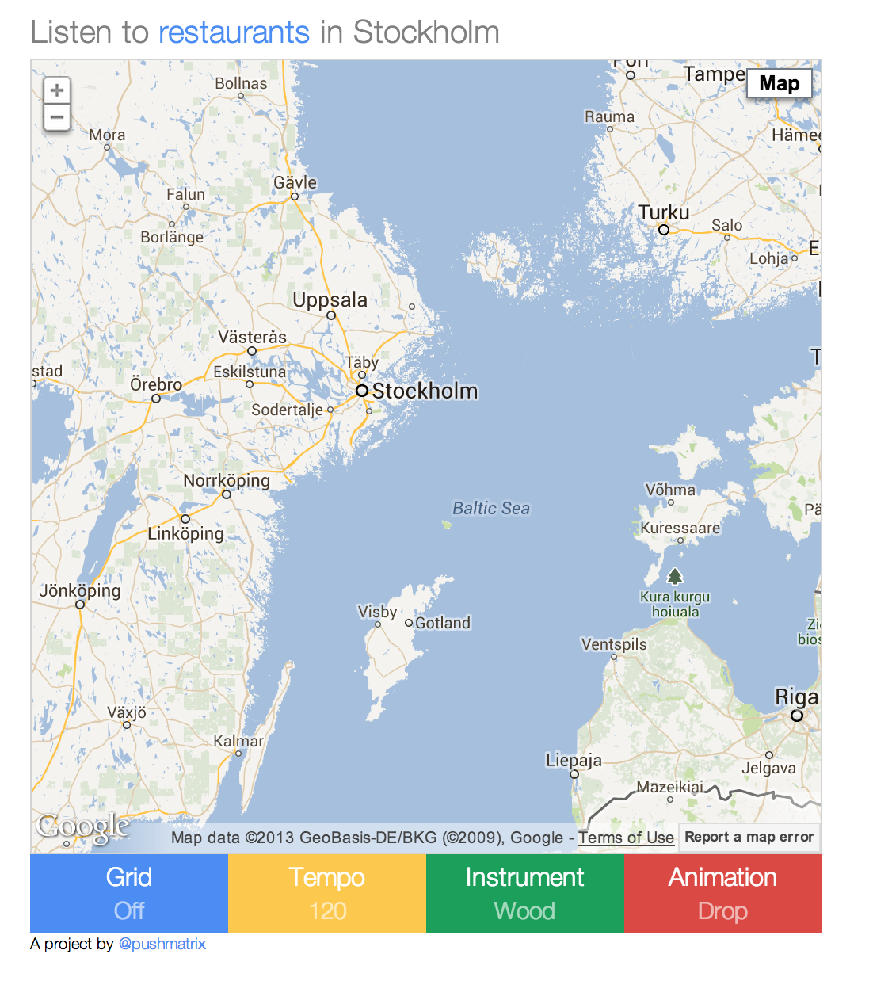
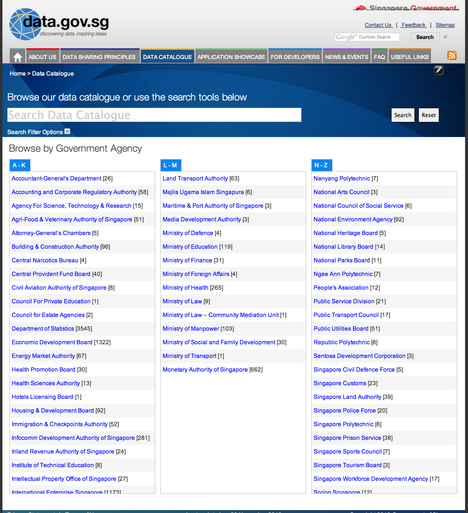
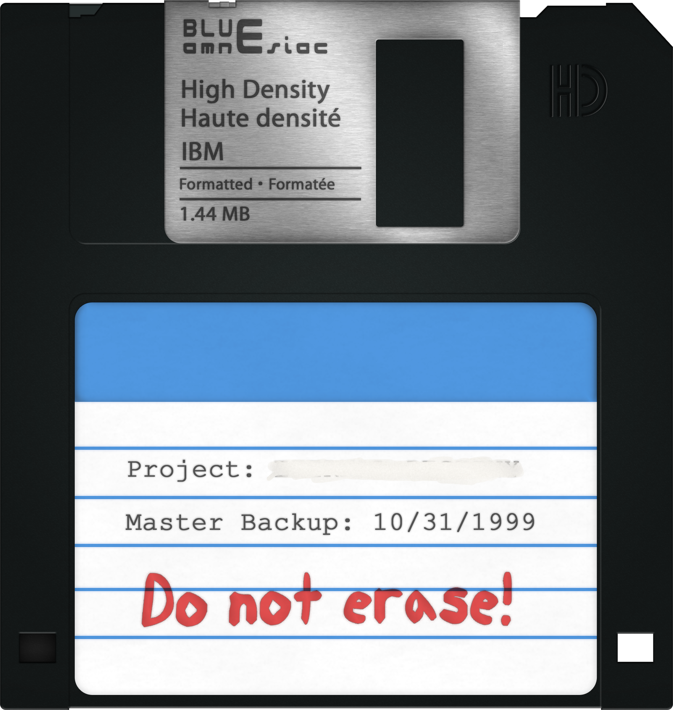
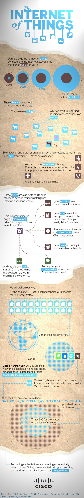
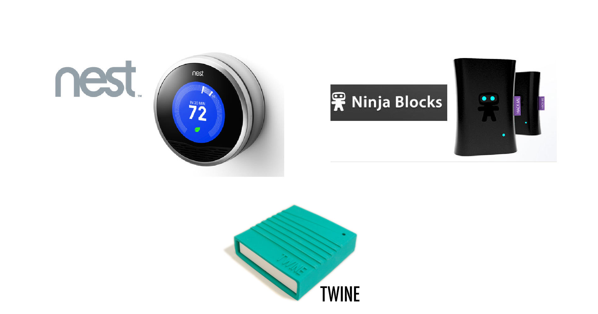

Hello!


Data in 60 weeks
Data in 5 days
Data in 30 minutes
Data is boring
Boring and Useless
Thanks for coming
Open Data:
Freely accessible & machine readable data.
Mmmm...raw data

Mmmm...raw data on a map

Stumble safely

Sweet music
Where is this data?
Data portals
Don't worry....it's anonymized
(Or is it?)
Big Data?
You have A spreadsheet of 1000 rows.
Big Data?
You have A spreadsheet of 1M rows.
Big Data?
Rule of thumb:
If you can load it in excel, it's not big data.
Imagine the data google has on the web
That's big
LHC
- 150 million sensors delivering data 40 million times per second.
- After dealing with 0.001% of the sensor stream data.
- 25 petabytes of data annually
Please enter disk
1 of 18 641 351 100

2.6 Million GB
parallel_processing.jpg
2.5 exabytes a day
Please enter disk
1 of 1 908 874 350 000
head_exploding.gif
2.5 billion GB
IP Addresses
192.168.0.1
4.3 billion IP Addresses
IPV6
100 addresses for every atom of mass on earth
Infographic
Home Automation
Realtime Data
Google Analytics In realtime
Data Driven Decisions
You should learn to code
Javascript
D3

example_of_app.html
Hackfests
("Let's make cool stuff" party)
Why should you go?
Upcoming meetup
Next event: January 28th, 8PM-10PM
http://hackerspace.sg
Data in 30 minutes
Data in 60 seconds
- Data is boring and useless by itself.
- Open Data is publicly available and machine readable data.
- Big Data is data so large that you can't rely on traditional methods for analysis.
- Realtime Data is great, but hard to do properly.
Your next steps
- Bring a data-driven mindset to your company.
- Learn to code (or at least understand some of it).
- Go to a hackfest to meet interesting people.